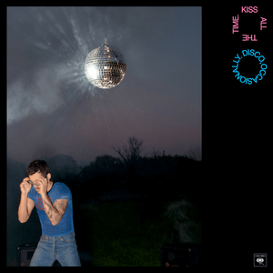

by Harry Styles
I have been a fan of a few Harry Styles songs, both singles and as a member of One Direction. When I first saw there was a new "non-skip" album released, I knew I had to dive right in. I was disappointed to say the least about these tracks. It felt as though literally every single one was missing something, whether it was a lyrical metaphor, a background track, or some stronger vocals. After this album, I would confidently say that Harry Styles is not my cup of tea, but that I can respect his fans that enjoy this genre of music. At best, I would only add some of these tracks to a playlist to tune out and play in the background. My personal favorite tracks off this album were the only 3 in the A tier; Carla's Song, Pop, and Are You Listening Yet?. Album was reviewed on March 11th, 2026.